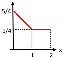
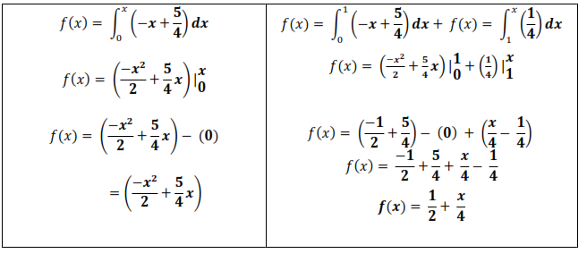
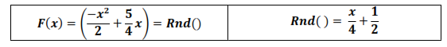
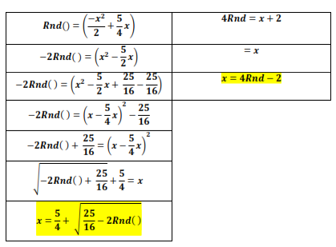

Método de la Transformada Inversa
Es un método para la generación de números aleatorios de cualquier distribución de probabilidad continua cuando se conoce la inversa de su función de distribución.
El método de la transformada inversa se basa en el siguiente teorema:
1Ejercicio
Generar por el método de la transformada inversa, números al azar que sigan las siguientes distribuciones de probabilidad:

- Identificar cuantos tramos tiene la figura.
- Identificar el tipo de comportamiento que se va a generar en cada tramo.
- Identificar cada uno de los puntos de los tramos y la ecuación que lo define
Tramo 1 (0, 1) Tramo 2 (1, 2) P1(0, 5/4) P2(1, 1/4)
P1(1, 1/4) P2(2, 1/4)
Calculamos la pendiente m = (Y2-Y1)/(X2-X1)
((1/-4)-(5/4))/(1-0) = -1/1 =-1
((1/-4)-(1/4))/(2-1) = 0/1 =0
-
Calculamos el punto pendiente de y-y1=mx-x1
y-5/4=-1(x-0)
y=-x+5/4y-1/4=0(1-1)
y=1/4 -
Identificar la función que describa la dsitribución
Tramo 1 Tramo 2 y=-x+5/4 y=1/4 -
Genera la distribución acumulada
 -
Reemplazar la "f(x)" por un random
 -
Despejar la "x", hallando la función inversa
